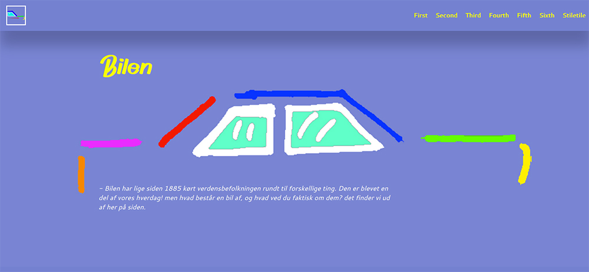
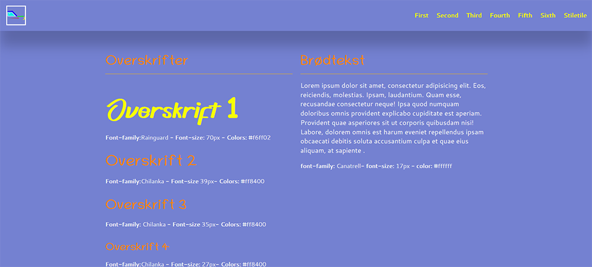

På temaet "Grundlæggende web" fik jeg kendskab til det helt basale inde for kodning i HTML og CSS. Vi fik en viden for de grundlæggende principer inde for komposition og layout. Iblandt det tæller getaltlove, rule of third og responsiv web. Jeg fik afprøvet forskellige designprocesser, som moodboard, styletile og wireframes og vi lærte metoder til strukturering og modellering af HTML og CSS. Jeg fik også kendskab til de mange stilarter der er indenfor webdesign, såsom brutalisme, flat design og minimalisme. Jeg fik tildelt den sidste, som en stilart jeg skulle kode ud fra. Jeg lavede et moodboard, så jeg kunne finde ud af hvordan mit site skulle se ud. Jeg søgte på Reddit efter inspiration og fandt det. Derefter lavede jeg et styletile, så jeg kunne bestemme mig for farver, fonte og størrelser på sitet. Min gruppe og jeg brugte samme metoder i Tema 5, hvor vi skulle redesigne en website. Det gjord vi så vi kunne finde et fælles ståsted og vidste hvad vi skulle gå ud fra så vi ikke gik hver vores vej. Vi lavede også wireframes og prototyper/layout diagram. Kodning og viden til HTMl og CSS har jeg også brugt i Tema 3, hvor vi skulle lave vores eget spil med JavaScript.

